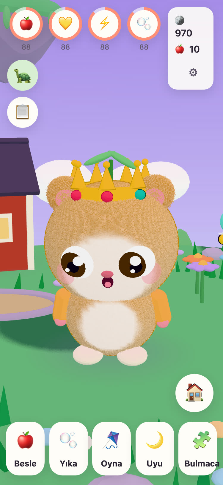
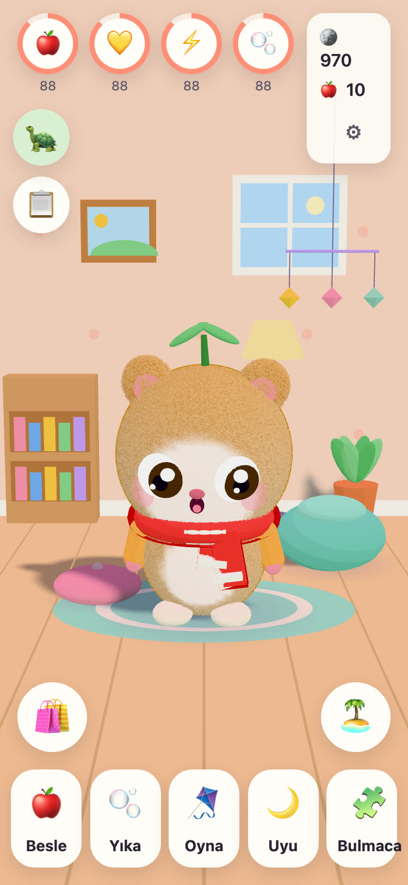
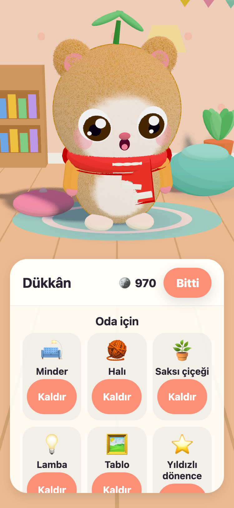
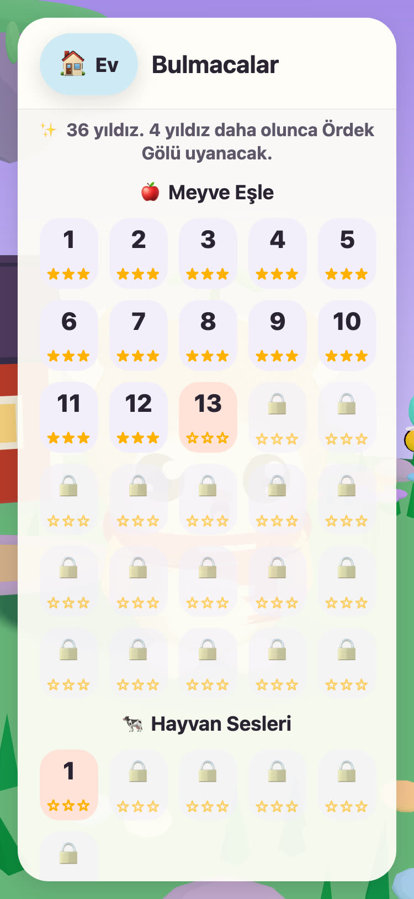

JUNOLittle Worlds
Çocuğunuz bir Juno'yu yumurtadan çıkarır, ona bakar ve havada süzülen bir adayı uyandıran nazik bulmacalar çözer. 6 ile 10 yaş arası çocuklar için iPhone ve iPad'de sakin bir oyun.
Merhaba! Üç sıcak yumurta buldum. Hangisi senin?
- Reklam yok
- Takip yok
- Hesap yok
- Zamanlayıcı ya da baskı yok




Kendine ait küçük bir dost
Çayır Adası'na göz kulak olan yaşlı kaplumbağa Dede Tintin üç sıcak yumurta buldu. Çocuğunuz birini seçer ve içinden çıkana bir ad verir. O andan itibaren Juno onundur: onu besler, yıkar, onunla oynar ve uyutur.
-
Bir yumurta seç
Üç sıcak yumurta, üç renk. Çocuğunuz birini seçer ve çatlamasını izler.
-
Ad ver, sev
Besle, yıka, oyna ve uyut. Juno nasıl hissettiğini gösterir ve dostlukları büyüdükçe o da büyür.
-
Adayı uyandır
Her bulmaca yıldızı Çayır Adası'na ışığı geri getirir; ta ki çiçekler, arılar ve ördekler yeniden yuvalarına dönene dek.
Besle, yıka, oyna, uyut
Farklı yiyecekler ve oyuncaklar, banyoda köpükler ve nasıl hissettiğini gösteren bir Juno. İhtiyaçlar yavaşça azalır ve asla sıfıra inmez; bu yüzden bir Juno asla kaybolmaz.
57 nazik bulmaca
Meyve Eşle, Hafıza Bahçesi ve gerçek kayıtlarla Hayvan Sesleri ve Araç Sesleri. Yıldızlar hamlelerden gelir, asla süreden değil; yeniden denemek her zaman ücretsizdir.
Uyanan bir ada
Çiçek Bahçesi arılarla açılır, Ördek Gölü suyla ve ördeklerle dolar, bahçe tarhlarında tohumlar elmaya ve çileğe dönüşür.
Sıcacık yapılacak bir oda
Bulmacalardan ve günlük görevlerden gelen altınlarla Juno'nun odası için süsler ve giyeceği kıyafetler alınır. Altın dükkânındaki hiçbir şey gerçek paraya mal olmaz.
Sesli okuma
Dede Tintin, henüz okuyamayan çocuklar için her satırı kendi sıcak sesiyle yüksek sesle okur. Yeniden dinlemek için ona dokunun.
Ebeveyn Alanı
Ebeveyn kilidinin arkasında: dil, sesli okuma, sesler, uyku saati ve nazik bir mola hatırlatıcısı. Uyku saatinde Juno uyur ve bulmacalar sabaha kadar bekler.
21 dil konuşur
Dede Tintin çocuğunuzla kendi dilinde konuşur. Ebeveyn Alanı'ndan bir dil seçin ya da oyunun cihazın dilini izlemesine izin verin.
English Svenska Dansk Norsk Suomi Deutsch Nederlands Français Español Italiano Português (Brasil) Polski Русский Ελληνικά Türkçe Bahasa Melayu Kiswahili हिन्दी 日本語 한국어 简体中文
Bir dedenin elinden
JUNO'yu İsveç'te bir dede, kız torunu için yaptı: onun oynadığını görmekten mutlu olacağı bir oyun. Oyundaki kaplumbağa Dede Tintin, onun ta kendisi.
Bu yüzden kurallar basit. Baskı yapan hiçbir şey yok, kandıran hiçbir şey yok ve çocuğunuz hakkında herhangi bir şey toplayan hiçbir şey yok.
Ücretsiz ve reklamsız
JUNO'yu indirmek ücretsizdir; reklam, takip ve hesap yoktur. Çocuğunuzun yaptığı her şey cihazınızda kalır. Gizlilik sayfasına göz atın.
Bir yetişkin, ebeveyn kilidinin arkasındaki Ebeveyn Alanı'ndan JUNO Plus'ı veya Kış Paketi'ni satın alabilir. İkisi de geri yükleyebileceğiniz ve ailenizle paylaşabileceğiniz tek seferlik satın alımlardır.